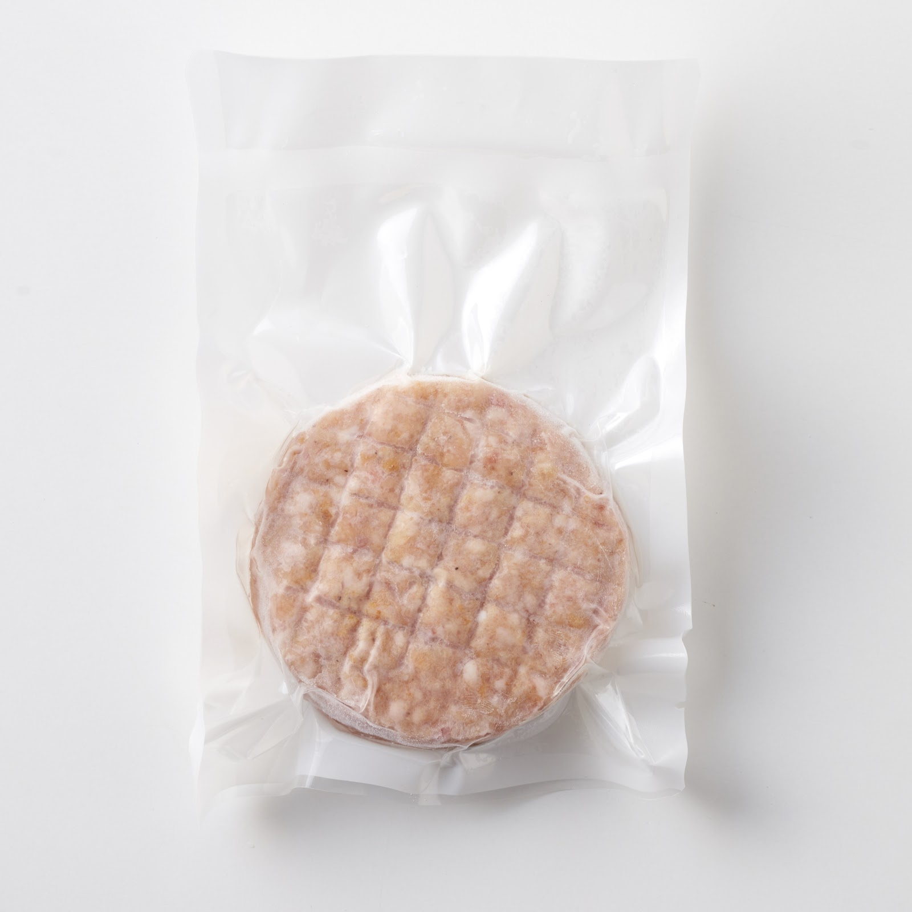

SCENE 01
M004

m 贈り物
佐賀牛網目付きハンバーグ
【佐賀牛の旨み、じゅわっ。焼くだけで、食卓がごちそうに。】
- 内容量10個（140g×10ｐ）
- 保存冷凍
- 産地日本
商品の特徴を読む
今夜の食卓に、まるでレストランのような一皿はいかがですか。美しい網目模様が食欲をそそる、特別なハンバーグをご用意しました。主役は、日本が誇るブランド牛「佐賀牛」。その中でも厳選した部位を100%使用し、九州産の豚肉を絶妙なバランスで合わせることで、驚くほどジューシーで深いコクのある味わいを実現しました。一つひとつ丁寧に成形し、プロの焼き加減を再現する網目をつけたハンバーグは、冷凍庫から取り出して焼くだけで、ふっくらと肉汁あふれる仕上がりに。1個140gの満足サイズが10個入ったセットなので、ご家族の夕食はもちろん、急なお客様のおもてなしや、忙しい日のストックとしても大活躍します。ご自宅用だけでなく、大切な方への贈り物としても大変喜ばれる一品です。このハンバーグがあるだけで、いつもの食事が特別なひとときに変わります。ぜひ、佐賀牛ならではの贅沢な旨みをご家庭でお楽しみください。
公式サイトへ移動します。価格・在庫・配送条件は移動先で最終確認してください。
SCENE 02
その中でも厳選した部位を100%使用し、九州産の豚肉を絶妙なバランスで合わせることで、驚くほどジューシーで深いコクのある味わいを実現しました。
SCENE 03
一つひとつ丁寧に成形し、プロの焼き加減を再現する網目をつけたハンバーグは、冷凍庫から取り出して焼くだけで、ふっくらと肉汁あふれる仕上がりに。
PRODUCT INFORMATION
購入前に確認したい商品情報
- 商品名
- 佐賀牛網目付きハンバーグ
- 商品規格
- 10個（140g×10ｐ）
- 保存方法
- 冷凍
- 原産国
- 日本
- 製造地
- 日本
- 賞味期限
- 発送日より3ヶ月
原材料
牛肉(佐賀牛 100%)、豚肉(九州産)、調味料(パン粉、乾燥玉ねぎ、ブドウ糖、粒状植物性蛋白、食塩、オニオン粉末、脱脂粉乳、ガーリック粉末、胡椒、乾燥卵白、粉末油脂)、焼肉のたれ(醤油、ぶどう糖果糖液糖、米発行調味料、その他)、生パン粉(小麦粉、イースト、ショートニング、食塩)、精製塩、ブラックペッパー、植物油脂/リン酸加エデンプン、調味料(アミノ酸等)、増粘剤(加工デンプン、アルギン酸エステル)、リン酸塩(Na)、酸化防止剤(V.C)、着色料(カラメル色素、パプリカ色素、)、pH調整剤、乳化剤、香料、イーストフード、V.C、塩基性炭酸マグネシウム、酸味料、(一部に卵·乳成分·小麦·えび·牛肉·ごま·大豆·鶏肉·豚肉·りんごを含む)
FAQ
購入前のよくあるご質問
美味しく焼くコツはありますか？
冷蔵庫で半日ほどかけてゆっくり解凍するのがおすすめです。フライパンに油をひき中火で両面に焼き色をつけたら、蓋をして弱火でじっくり中まで火を通してください。竹串を刺して透明な肉汁が出れば焼き上がりのサインです。
おすすめの食べ方はありますか？
まずはシンプルに塩コショウなどで肉本来の味をお楽しみください。その他、デミグラスソースで煮込みハンバーグにしたり、和風におろしポン酢でさっぱりといただくのもおすすめです。ロコモコ丼の主役にもぴったりです。
MEAT PLUS OFFICIAL SHOP
【佐賀牛の旨み、じゅわっ。焼くだけで、食卓がごちそうに。】
仕入れ・加工・梱包・発送まで自社で行うMEAT PLUSの公式オンラインショップでご注文いただけます。
公式オンラインショップで購入する商品選びの要点
佐賀牛網目付きハンバーグ。商品規格：10個（140g×10ｐ）。保存方法：冷凍。原産国：日本。製造地：日本。賞味期限：発送日より3ヶ月。
価格・在庫・配送日・送料・ギフト対応は、公式通販の商品ページで最新情報をご確認ください。